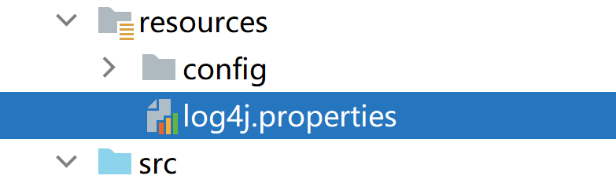

日志操作包——Log4J
Apache提供的一款专业的日志输出工具
一、为什么要使用log4j这样的工具
在应用程序中添加日志记录总的来说基于三个目的：
1、监视代码中变量的变化情况，周期性的记录到文件中供其他应用进行统计分析工作；
2、跟踪代码运行时轨迹，作为日后审计的依据；
3、担当集成开发环境中的调试器的作用，向文件或控制台打印代码的调试信息。
传统方式：
System.out.println()：
只能输出到控制台
但凡修改，必动源码
Log4J：
性能较高
可以将日志保存到任意地方（控制台、文件、数据库、远程服务器……）
可以指定日志输出的格式
可以指定日志的输出级别
二、级别（Level）
常用的五个级别（由低到高）
debug—— 一般调试信息
info —— 基本信息
warn —— 警告信息
error —— 错误信息
fatal —— 致命错误信息
注意：如果指定输出的级别是warn，则只会输出warn以上级别的日志信息，debug和info则不会输出了
如果指定是debug，则debug以上的都会输出
三、log4J的三大组件
1、Looger（日志器）
负责输出日志
2、Appenders（输出器）
负责指定日志输出的地方
（1）ConsoleAppenders 控制台
（2）FileAppender 文件
（3）DailyRollingFileAppender 每天产生一个日志文件
（4）RollingFileAppender 文件大小达到指定程度就会产生一个新的文件
（5）WriterAppender 以流的格式将文件输出到指定磁盘
（6）JDBCAppender 数据库
3、Layout（布局器）
负责指定日志输出的格式
（1）SimplerLayout 基本布局
（2）PatternLayout 以某种指定布局
（3）HTMLLayout
四、Logger
A、如何获取Logger对象？
Logger logger = Logger.getLogger(类.class);
B、确定日志输出的目的地（默认配置文件中指定了输出地在控制台）
BasicConfigurator.configure();
C、如何指定日志的输出级别？
logger.setLevel(Level.DEBUG);
D、如何输出日志？
logger.debug("打印出调试信息");
logger.info("打印出基本信息");
logger.warn("打印出警告的信息");
ogger.error("打印出错误信息");
logger.fatal("打印出致命错误信息");
PatternLayout 对齐的格式如下所示：
%c logger名字空间
%c{2} 如果加上{<层数>}表示列出从最内层算起的指定层数的名字空间
%C 列出调用logger的类的全名（包含包路径）
%d 显示日志记录时间
%d{yyyy/MM/dd HH:mm:ss,SSS}
%d{yyy MMM dd HH:mm:ss,SSS}，输出类似：2002年10月18日 22：10：28，921
%d{ISO8601} 2005-10-12 22:23:30,117
%F 显示调用logger的源文件名
%l 输出日志事件的发生位置，包括类目名、发生的线程，以及在代码中的行数
%L 显示调用logger的代码行
%m 显示输出消息
%M 显示调用logger的方法名
%n 当前平台下的换行符
%p 显示该条日志的优先级
%r 显示从程序启动时到记录该条日志时已经经过的毫秒数
小结：一个Logger可以有多个Appender，一个Appender只能一个Layout。
五、log4j.properties
有三种配置方式
（1）默认配置
（2）Properties文件配置属性
（3）XML文件配置属性
log4j.properties是Log4j的配置文件，必须放在classpath下（即src文件夹下）
配置log4j.properties文件是一种更好的选择
用于配置级别、Appender和Layout
# -----------------日志配置文件
# rootLogger配置日志根Logger 格式：[日志级别①],输出目的地1,输出目的地2,输出目的地3......
log4j.rootLogger=debug,zktr,hyt,forDate
# -----------------配置日志输出目的地（log4j.appender.目的地的名字）
# 目的地zktr日志会输出System.out目标的信息，格式是（日志时间%d,日志内容%m,日志换行%n）
log4j.appender.zktr=org.apache.log4j.ConsoleAppender
log4j.appender.zktr.Target=System.out
log4j.appender.zktr.layout=org.apache.log4j.PatternLayout
log4j.appender.zktr.layout.ConversionPattern=%d{yyyy-MM-dd HH:mm:ss} %m%n
# 目的地hyt会在文件(默认在tomcat的bin目录下)中输出日志，格式是（日志时间%d,日志位置%l,日志内容%m,日志换行%n）
log4j.appender.hyt=org.apache.log4j.FileAppender
log4j.appender.hyt.File=logs/2000-1-1.log
log4j.appender.hyt.layout=org.apache.log4j.PatternLayout
log4j.appender.hyt.layout.ConversionPattern=%d{yyyy-MM-dd HH:mm:ss} %l %m%n
### 指定固定的路径，以日期为文件名每天一个（当天默认是log.log,修改当天日期可看到会把之前的文件名进行修改logxxxx.log） ###
log4j.appender.forDate = org.apache.log4j.DailyRollingFileAppender
log4j.appender.forDate.File = d:/log4j/log.log
log4j.appender.forDate.DatePattern=yyyy-MM-dd'.log'
log4j.appender.forDate.Append = true
log4j.appender.forDate.layout = org.apache.log4j.PatternLayout
log4j.appender.forDate.layout.ConversionPattern = %-d{yyyy-MM-dd HH:mm:ss} [ %t:%r ] - [ %p ] %m%n
#目的地mysql会把日志输出到数据库表mylog中。(类的全称%c,日志级别%p,日志内容%m,日志换行%n)
#log4j.appender.mysql=org.apache.log4j.jdbc.JDBCAppender
#log4j.appender.mysql.driver=com.mysql.jdbc.Driver
#log4j.appender.mysql.URL=jdbc:mysql://localhost:3306/你的数据库?useUnicode=true&characterEncoding=UTF-8
#log4j.appender.mysql.user=root
#log4j.appender.mysql.password=你的密码
#log4j.appender.mysql.sql=insert into mylog (create_time,info) VALUES ('%d{yyyy-MM-dd hh:mm:ss}', '%c %p %m %n')
#log4j.appender.mysql.layout=org.apache.log4j.PatternLayout
# 需要加载驱动和建表
#CREATE TABLE mylog(
#logid BIGINT PRIMARY KEY AUTO_INCREMENT,
#create_time TIMESTAMP,
#info VARCHAR(200)
#);
#输出到oracle数据库
#log4j.appender.oracle=org.apache.log4j.jdbc.JDBCAppender
#log4j.appender.oracle.driver=oracle.jdbc.driver.OracleDriver
#xe是oracle的实例名，一般是orcl
#log4j.appender.oracle.URL=jdbc:oracle:thin:@127.0.0.1:1521:xe
#log4j.appender.oracle.user=scott
#log4j.appender.oracle.password=123456
#log4j.appender.oracle.sql=insert into class_log (create_time,log) VALUES ('%d{yyyy-MM-dd hh:mm:ss}', '%c %p %m %n')
#log4j.appender.oracle.layout=org.apache.log4j.PatternLayout
# ① 日志级别，Log4j常用四个级别，优先级从高到低分别是ERROR、WARN、INFO、DEBUG
# 通过定义的级别，可以控制到应用程序中相应级别的日志信息的开关。比如WARN级别，则低于WARN级别（INFO/DEBUG）的日志信息将不被打印出来

注意：

//获取工程所在的目录
String path =CustomizeLog.class.getClassLoader().getResource("//").getPath();
//通过PropertyConfigurator指定配置文件的路径
PropertyConfigurator.configure(path+"config/hyt.properties");